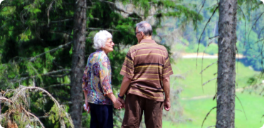
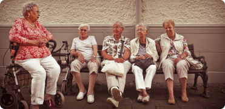
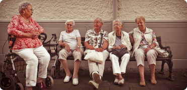
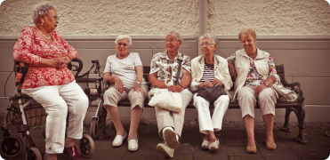

Showing greater respect to older adults can be done in several ways
: acknowledging and putting to use the talents and skills of older
adults; creating intergenerational initiatives; and allowing older
adults to stay active and independent for as long as possible.


we understand
Older adults want to play active and meaningful roles in their
lives, including as part of a social network, a neighborhood, and a
community. Service providers and policymakers must consider that a
lack of sense of purpose can become problematic as people age.
Engaging them in leisure activities and volunteer work is important.
Older adults want to stay active and contribute to society in a
reciprocal manner (meaning that they want to exchange their services
and skills with others for the mutual benefit of the neighborhood or
community). Qualitative and quantitative studies published from 2005
to 2016 examining the social needs of older adults were eligible for
inclusion.
To stimulate social contacts, neighborhood initiatives can be
developed. Social meeting places, such as pubs and churches can
help to foster the development of close and peripheral
relationships.

 
